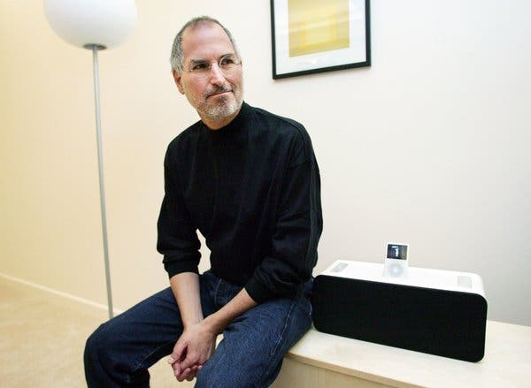

Steve Jobs
February 24, 1955 - October 5, 2011

Born on February 24,1955 in San Francisco, Steve Jobs grew up in Mountain View, California and was adopted by Paul and Clara Jobs.
In Steve's early childhood, he played with electronics in his garage where most kids were playing with toys in there homes. Steve was so smart he skipped grade 5 and went straight to middle school even though during school, he never payed attention and was bored all the time.
He attended homestead Highschool where he met his best friend Steve Wozniak. They later went on to grow Apple into the tech behemoth they are today.
Steve attended Reed College in 1972, where he dropped out and worked for a video game company called Atari in 1974.
Steve later came back to California in 1976 where Jobs and Wozniak worked on computers in the Job's family garage. They started selling their belongings in order to fund their plan and later became the co-founders of Apple.
The first computer built, the Apple I, was not very impressive.The Apple II on the other hand, was a major improvement that caught the attention of former Intel employee Mike Markkula who invested in the company to heelp fund advertisements. Sales improved from 1978-1980.
Steve focused on creating the Macintosh. It did not sell as well as he hoped. Later on, Apple CEO John Scully removed Steve from his poition in 1985 saying "he wasn't benefiting the company".
Moving forward in Steve's life, he returned to apple in 1997 and launched the iMac which was one of Apples biggest successes. He was then named the Permanent CEO of Apple in 2000.
The iPod was Apple's next invention and was revoloutionary in the 2000's. he also created itunes, which is a music software that allowed people to listen to music on apple products. The iPod was super succesful and was all thanks to Steve Jobs.
Steve was diagnosed with pancreatic cancer in 2003 and was luckily able to get surgey in 2004 to cure his cancer.
In 2007, the first ever iphone was released and in 2010, the iPad was released. The two products were extremely successful and helped Steve become one of the innovators of the 21st century.
He then died October 5,2011 at age 56 from pancreatic cancer. This shook the tech world and was a sad day for our world.
Steve Jobs is still remembered for his achievements to our world and technology by creating the iPod,iPad,iPhone and iMac, all Electronics that changed the world and inspired computer scientists around the world.
Below is a link to learn more about Steve Jobs.
